Monday, 3:32pm
Completed the FabLab Safety Quiz 2021 that covered proper attire and the safety measures to be taken when using facilities in the FabLab.

Completed the FabLab Safety Quiz 2021 that covered proper attire and the safety measures to be taken when using facilities in the FabLab.
Mr Steven Chew goes through the various tools suggested / to be covered for use in the DFAB module:

Set up the Github repository for the project:
Went through the git CLI commands and started on managing the project using git
Finished the website based on a few templates I found online, and combined them together
The modifications included the green scrollbar at the side, inclusion of a timeline, some subtle card features, and other small details that were not included in the original template.
However, the other pages were still a work in progress, and the about me page was cleared for now (for privacy)
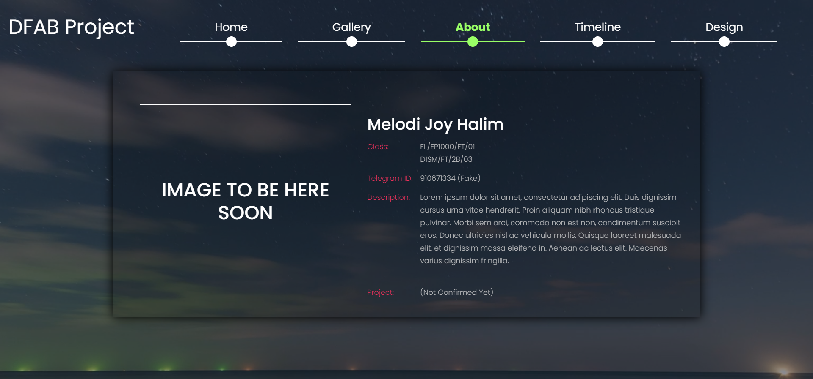Added a navigation bar to the timeline page to eliminate the need for scrolling
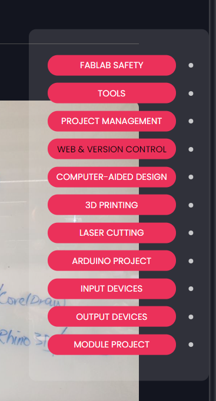We did exercises 3, 4 and 6 for learning about the general use of Fusion 360 for 3D Modeling.
The rest of the exercises can be found at: https://en.calameo.com/read/004987257fab6b0564037
 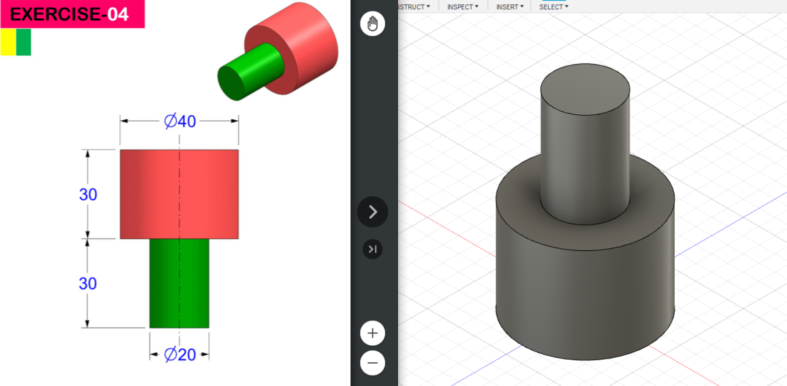
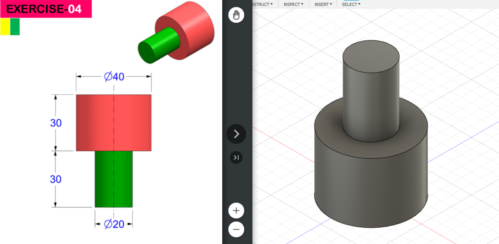

The rest of exercises 1, 2, and 5:
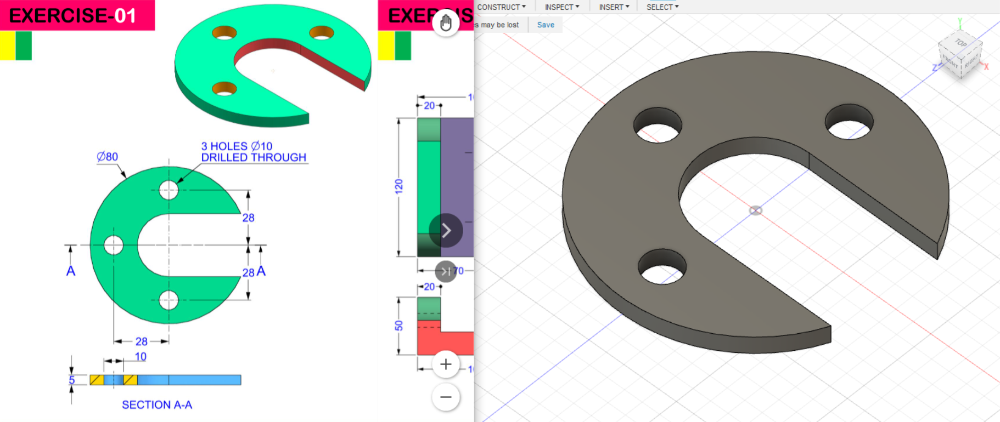 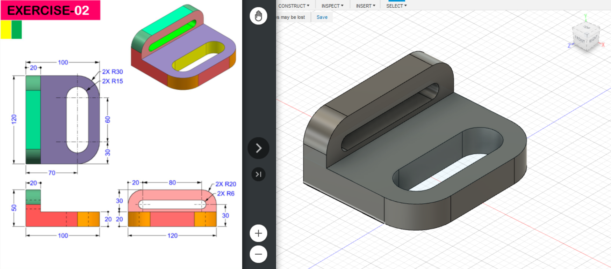 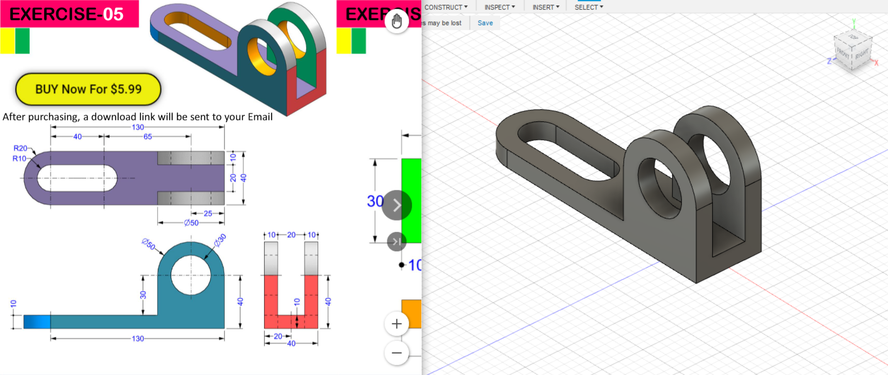So far, at least, Fusion 360 seems like a relatively easy and useful tool. I get tripped up sometimes because the user interface controls can be just slightly different from Blender or Unity in terms of rotation (having to use the ViewCube instead of right-clicking, etc.).
It's very helpful with dimensions and accurate lengths, though.
I need to get more familiar with using constraints ^^;
Continued practicing using the loft, fillet, and hole tools:
Made a chess pawn using the rotate tool:
 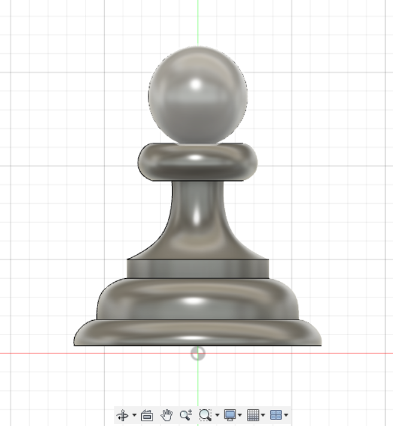
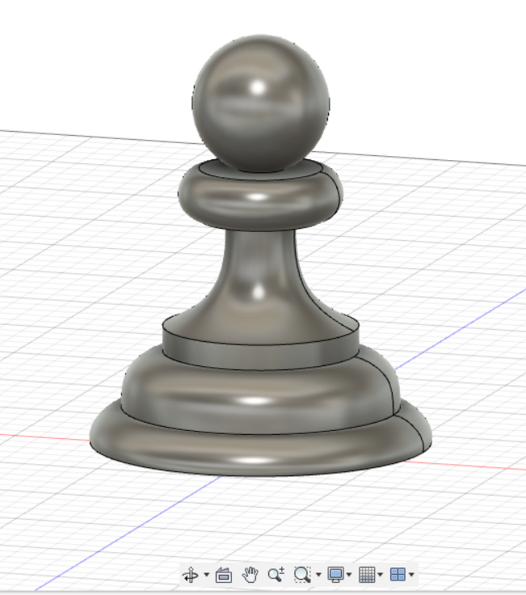
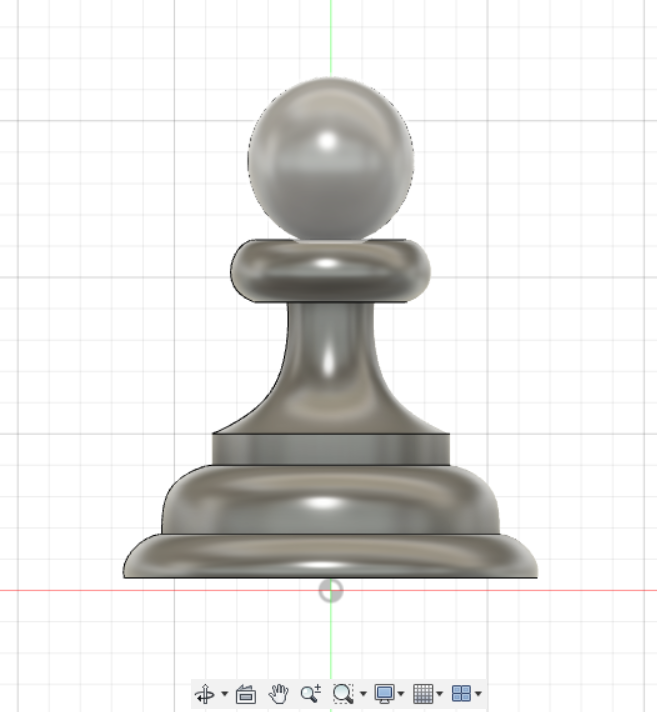
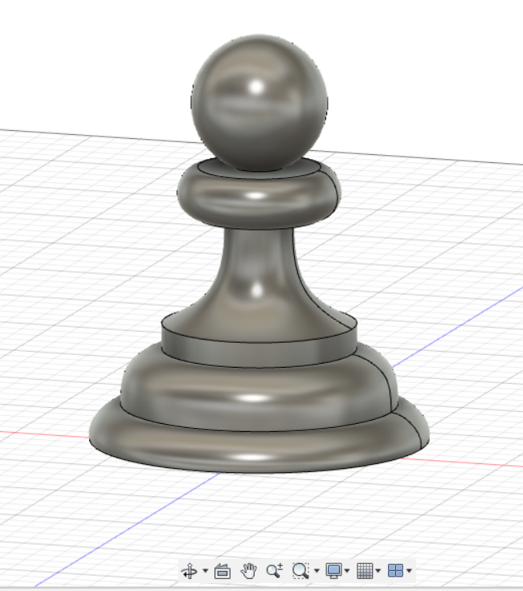
2 important concepts for CAD design:
We created a knight chess piece to apply the skills we had learnt for Fusion 360
It consisted of two separately modelled parts including the knight and the base

which were both made with reference to this image (with slight modifications to the base)
It was also a good time to get the 3d printing quiz completed:
The chess piece was done and the bevels were improved as well
Viewing the file in Cura before 3d printing:

We were brought to the FabLab at Level 1 to test out the laser cutter with the initials of our name
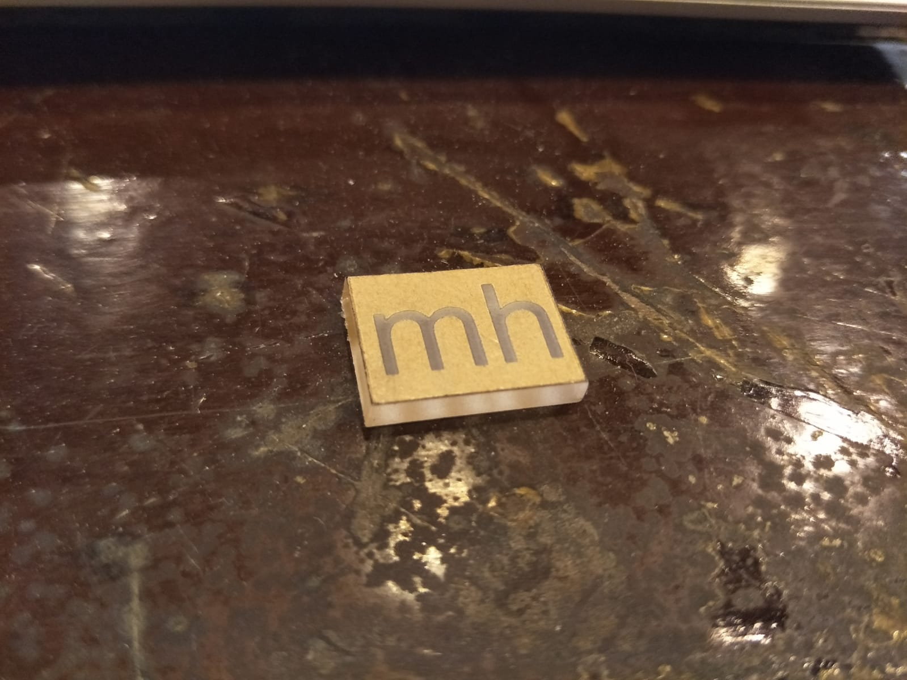The quiz was completed before as well:
The dimensions of the music box needed to be measured first in the planning process
We were to finish up the music box to be made using Fusion 360:
The remaining time was used to check if the rotation of the music box was feasible without any of the components colliding into one another
It was then to be brought to the laser cutter to be cut out